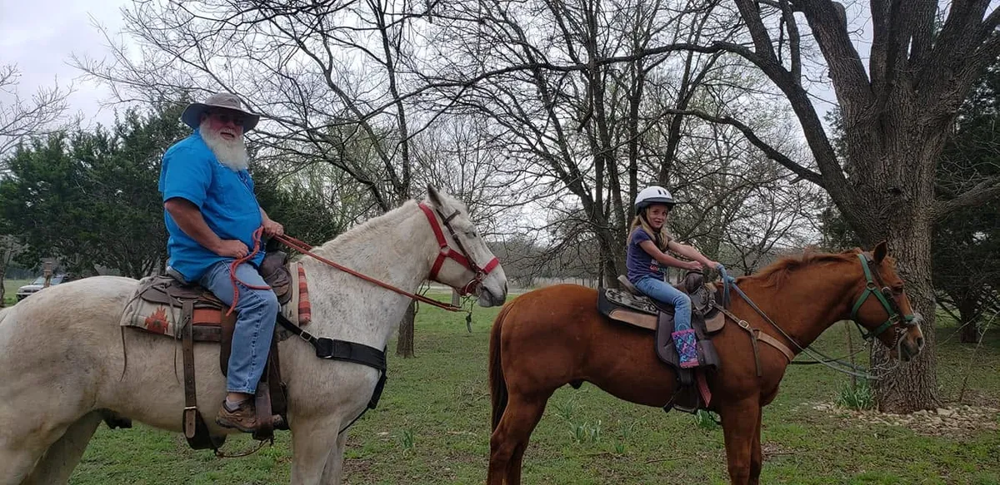
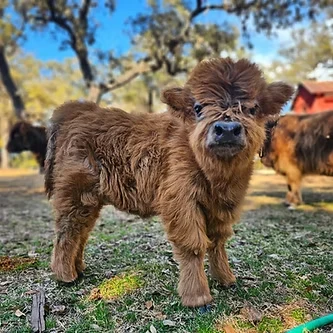
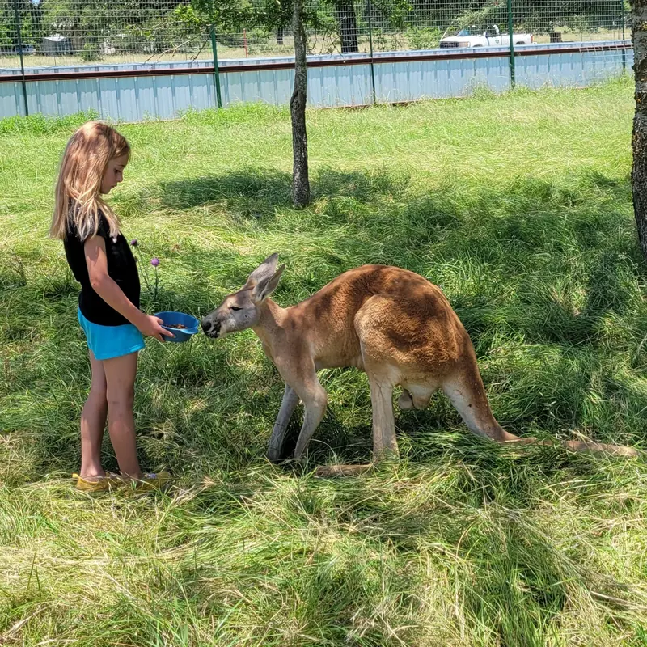
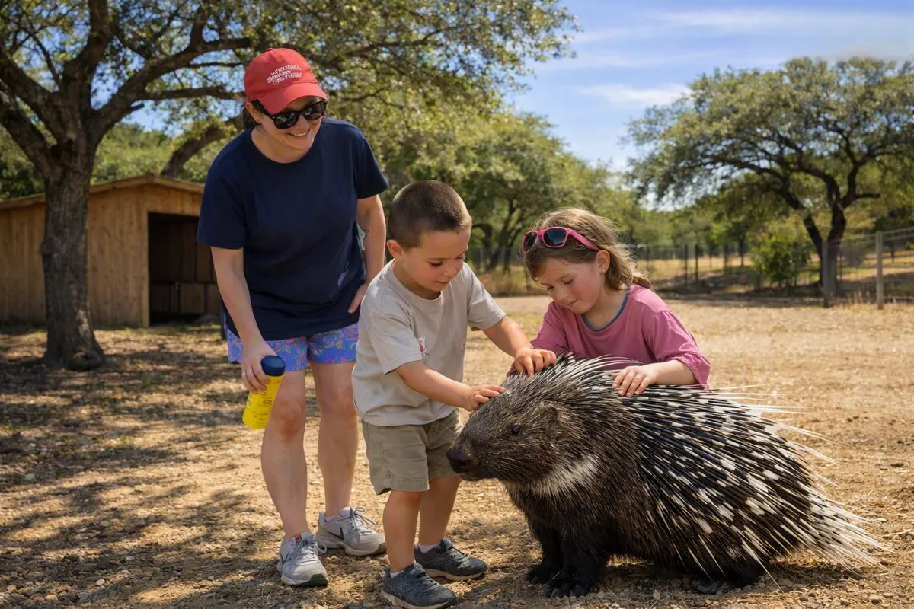
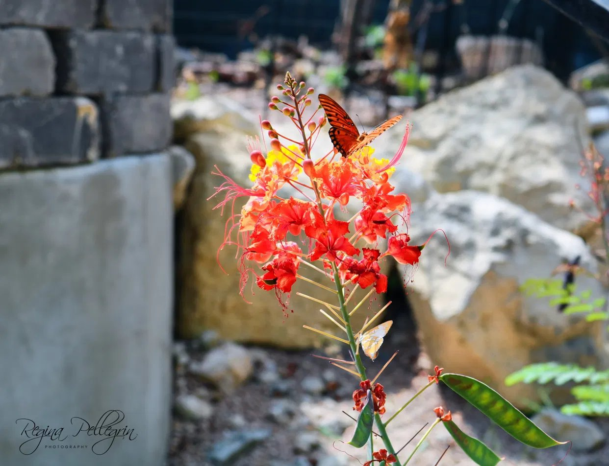
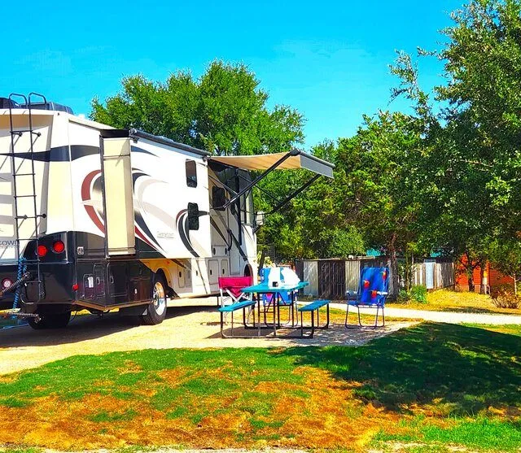

Things to Do in Bandera, TX
Honky-tonks, horseback rides, museums, state natural areas and small-town Main Street. A local's guide from Al's Hideaway, about 15 minutes from downtown Bandera.
Check Availability & Book Your StayWhy Bandera Is Worth the Trip
Bandera calls itself the Cowboy Capital of the World, and it earns the name. You will find horses tied up next to motorcycles on Main Street, the oldest honky-tonk in Texas still pouring beer, and dude ranches that have been taking guests out on trail rides for generations.
We live and work about 15 minutes from downtown Bandera, in Pipe Creek, and these are the places we send our own guests. Below you will find our picks for live music, history, riding, the outdoors, food and the big events of the year, plus a simple weekend plan.
Honky-Tonks & Live Music
The heart of a Bandera night out is a couple of blocks of Main Street and 11th Street.
Arkey Blue's Silver Dollar
Down a set of stairs under the Bandera General Store, this saloon is billed as the oldest continuously operating honky-tonk in Texas. Arkey Juenke took it over in 1968, and the walls are covered with decades of memorabilia. Expect live country music, a dance floor and plenty of character.
308 Main St, Bandera. Bring cash.
11th Street Cowboy Bar
One block off Main Street, this big open-air bar is known for its Wednesday steak night: bring your own cut and cook it on their pits, with live music after. It is biker-friendly, and it is also home to the Cowboy Mardi Gras festivities each winter.
307 11th St, Bandera.
The Koop
A bar and grill on Main Street in downtown Bandera, run by our own kids, so yes, we are biased. Stop in for a burger and a cold drink between Main Street shops and the honky-tonks.
Main Street, Bandera.
Music schedules change week to week, so check each venue's page before you head out.
Museums & Cowboy History
Two museums and a historic downtown make an easy half day.
Frontier Times Museum
Bandera's museum of the American West has been collecting for more than ninety years: cowboy gear, Native American artifacts, the Texas Heroes Hall of Honor and a long list of Old West oddities. Plan at least an hour.
510 13th St, one block north of the courthouse. Open Monday through Saturday; check their site for hours and admission.
Bandera Natural History & Art Museum
More than 100 full-size animal mounts in painted habitat dioramas, life-size dinosaurs outside, and an international art collection inside. It is a good rainy-day stop and an easy one to pair with lunch in town.
267 Old San Antonio Rd, Bandera. Call 830-328-5090 for current hours.
Bandera County Courthouse & Main Street
The historic courthouse anchors a downtown of Western stores, antique shops and old storefronts. Park once and walk it: the courthouse, the Frontier Times Museum, Arkey Blue's and 11th Street are all within a few blocks.
Downtown Bandera along Main Street (Highway 16).

Ride a Horse in the Cowboy Capital
You cannot leave Bandera without getting in the saddle. Local ranches offer one-hour trail rides, walk-only town and river rides for first-timers, full dude ranch day visits, sunset rides and longer rides at the Hill Country State Natural Area.
Several also let you meet and feed Texas longhorns. Our favorite for guests is Outlaw Outfitters, and we compare them with Rancho Cortez and Bandera Historical Rides on our full riding guide.
Compare Horseback Rides & LonghornsHiking, Biking & the Outdoors
Big open country, quiet trails and some of the best scenery in the Hill Country.
More than 5,000 acres of rugged trails southwest of Bandera for hiking, mountain biking and horseback riding, with primitive camping. It often fills up, so reserve a day pass through Texas Parks and Wildlife before you go. TPWD details.
Texas's newest state natural area is being built on Highway 46 in Pipe Creek, just minutes from Al's Hideaway, with hiking, camping and a nature center planned. Check TPWD for the opening date, and see our Kronkosky guide.
Bandera is the gateway to some of the most famous back roads in Texas. See our best scenic drives near Bandera and our motorcycle touring and rallies guide.
Bandera County is a birding hot spot, with hundreds of species recorded. Start with our Bandera County birding guide, then walk the native gardens at Al's Hideaway, a National Wildlife Federation Certified Wildlife Habitat.
Where to Eat & Shop in Bandera
A few Bandera classics our guests always ask about.
A Main Street institution for Tex-Mex and chicken-fried steak, named for the Old Spanish Trail that ran through town.
An old-fashioned general store with a soda fountain and hand-dipped ice cream, right above Arkey Blue's.
Local craft beer in the middle of cowboy country, an easy stop between Main Street and the honky-tonks.
Boots, hats, silver, Texas gifts and antique malls line Main Street. Allow an afternoon if you like to browse.
Back at Al's Hideaway, MeMaw's Country Store & Cafe has everything from lattes and energy drinks to hot breakfast and sandwiches, and it is open to the public.
Animal Encounters Near Bandera
Some of the most memorable stops are a few minutes from our gate in Pipe Creek.

Meet fluffy Highland cattle at Paisley's Pasture in Pipe Creek. Book your visit by emailing the farm directly; Al's Hideaway does not book farm visits. Highland cow details.

Ride a camel and feed kangaroos just down the road. See the camel farm.

Get up close with porcupines and other exotic animals. See animal encounters.
Bandera Events by Season
Plan around these and book early. The big weekends fill up fast.
Bandera's Western spin on Mardi Gras, with a parade, zydeco and floats. In 2027 it runs January 28–31. Our Mardi Gras story.
Mild weather brings riders from all over Texas. See our touring and rallies guide.
Bandera rodeos and the National Day of the American Cowboy fill the summer calendar. See summer rodeo season.
Labor Day's Bandera Round-Up, then the Cowboy Christmas night parade on Saturday, December 12, 2026, at 6:30 PM at City Park. See Cowboy Christmas in Bandera.
For the full calendar, check the Bandera County Visitors Bureau.
Birds, Wildlife & Everything You Need, Right Here
Some of the best things to do near Bandera happen without leaving the property.

A Certified Wildlife Habitat
Al's Hideaway is a Certified Wildlife Habitat through the National Wildlife Federation (habitat #352902). Our 20 acres, two creeks, hiking trails and native gardens give birds, bees and butterflies food, water and shelter, and we keep adding more through our Sponsor a Plot native garden program.
Birding From Your Porch
Birders have logged more than 300 species in Bandera County, and plenty of them pass right over our property. Look for cardinals, black-crested titmice, ladder-backed woodpeckers, canyon wrens, hummingbirds and the winter migrants. Our gardens also support Bandera County's effort to become a certified Bird City Texas community. See our Bandera County birding guide.
☕ MeMaw's Country Store & Cafe: no need to drive back into town. Our on-site store has specialty lattes and coffee, energy drinks, protein smoothies, hot breakfast and sandwiches, snacks, sno cones, ice, souvenirs and our handcrafted cabin soaps. Text your order ahead to 830-271-3331 and it will be ready when you walk in. The store is open to the public, so stop by even if you are staying elsewhere. See the menu.
A Simple Bandera Weekend
An easy plan for two nights, with Al's Hideaway as your home base.
Friday: Settle In
Check in at 3 PM, take a swim or walk the property, and enjoy dark skies with no city noise. Head into town for dinner and music at Arkey Blue's.
Saturday: Ride & Explore
Morning trail ride, lunch on Main Street, then the Frontier Times Museum and an afternoon of shopping. Evening at 11th Street or The Koop.
Sunday: Animals or Trails
Visit the Highland cows or camel farm in Pipe Creek, or hike the Hill Country State Natural Area before heading home.
Want to see more of the region? Our Texas Hill Country guide covers Boerne, Kerrville, Fredericksburg and San Antonio day trips, and the Hill Country map shows the drive times.
Where to Stay Near Bandera
Al's Hideaway is a family-owned, pet-friendly retreat on 20 acres in Pipe Creek, about 15 minutes from Bandera, with no pet, cleaning or resort fees. Compare options on our Bandera hotels and places to stay page.

Real beds, A/C and heat, and pets always free. See our Bandera-area cabins.

10 full-hookup pull-through RV sites up to 85 feet and 9 cowboy campsites. See RV & camping.

A pool, a covered pavilion with a fireplace and outdoor kitchen, a certified wildlife habitat, and MeMaw's Country Store & Cafe on site.